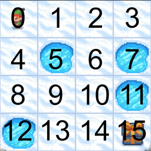

Tabular Q-Learning
Introduction
This blog post delves into the topic of Tabular Q-Learning, a specific type of Q-Learning. Q-Learning is used in various applications like game playing, robot navigation, in economics and trade, and many more. It's particularly useful when the problem model is not known i.e., when the outcomes for actions are not predictable.
Q-Learning is a reinforcement learning algorithm, designed to identify the best action-selection policy using a Q-Function. Reinforcement learning is a subset of machine learning where an agent learns to make decisions by taking actions in an environment to maximize some type of reward. Q-Learning is a model-free algorithm, which implies it doesn't need a model of the environment to learn.
The Q-Function measures the quality of an action in a specific state. This quality is calculated by adding the immediate reward to the discounted future reward. The discounted future reward is the highest possible discounted future reward achievable from the next state onwards.
By continuously updating the Q-Function, the algorithm enables us to create a table of Q-Values for each state-action pair. This table can then guide us to the optimal action-selection policy.
Prerequisites
For the code examples, we will use Python 3.11. The code is available in a Jupyter Notebook. The following libraries are required:
- Gym - OpenAI Gym is a toolkit for developing and comparing reinforcement learning algorithms.
- NumPy - NumPy is a library to add support for large, multi-dimensional arrays and matrices, along with a large collection of high-level mathematical functions to operate on these arrays.
Q-Learning - The Algorithm
1. Initialize the Q-Table with zeros.
The Q-Table initialization requires knowledge of the number of states and actions. For instance, in a simple game of tic-tac-toe, the states represent the various possible configurations of the tic-tac-toe board. Given that the board is a 3x3 grid with each cell capable of being empty, X, or O, there are $3^9 = 19.683$ potential states.
The actions, on the other hand, represent the various moves a player can make. Depending on the state, a player can place their mark in any empty cell. Therefore, the number of actions per state can vary from 1 (if only one empty cell remains) to 9 (if the board is empty).
In our tic-tac-toe example, the Q-Table would have 19.683 rows and 9 columns. Each row represents a state, and each column represents an action. The Q-Value for a state-action pair is stored in the corresponding cell.
2. Explore the environment by taking a random action.
Initially, the best action to take in a given state is unknown. Therefore, a random action is taken, and the reward and subsequent state are observed. The Q-Table is then updated using the Bellman Equation.
A balance between exploration (taking random actions) and exploitation (taking the best action) is maintained using an exploration rate. This rate represents the probability of the agent exploring the environment through a random action. Initially set to 1, the exploration rate ensures the agent always explores the environment randomly. Over time, this rate decays, leading to less exploration as the agent learns more about the optimal action-selection policy.
3. Update the Q-Table using the Bellman Equation.
The Bellman Equation, central to Q-Learning, is a recursive equation that calculates the Q-Value for a state-action pair. The equation is as follows:
$$ Q(S,A) = (1-\alpha) * Q(S,A) + \alpha * [R(S,A) + \gamma * \max_{a'} Q(S',a')] $$
Here,
- $Q(S,A)$ is the Q-Value for the state-action pair, representing the expected future reward for taking action A in state S.
- $\alpha$ is the learning rate, dictating how much the new information will override the existing information. This value ranges between 0 and 1, where 0 means the Q-Values are never updated, and 1 means the Q-Values are completely replaced by the new information.
- $R(S,A)$ is the immediate reward for taking action A in state S.
- $\gamma$ is the discount factor. It determines how much importance we give to future rewards. This is a value between 0 and 1. A value of 0 means that we only consider the immediate reward, while a value of 1 means that we consider future rewards with equal importance as immediate rewards.
- $S'$ is the next state, which is the state we transition to after taking the action A in state S.
- $\max_{a'} Q(S',a')$ is the maximum Q-Value over all possible actions $a'$ in the next state $S'$. This represents the best expected future reward after we have taken the current action and moved to the next state.
4. Repeat steps 2 and 3 until the Q-Table converges.
The Q-Table converges when the Q-Values cease to change, indicating that the Q-Values have converged to the optimal Q-Values. These optimal Q-Values provide the optimal action-selection policy, which in turn yields the maximum reward.
Implementation
We'll apply Q-Learning to the Frozen Lake game. This grid-world game requires the player to reach the goal without falling into a hole. The game is set on a 4x4 grid, with four cell types:
- S - Start state
- F - Frozen state
- H - Hole state
- G - Goal state
The player, or agent, can perform one of four actions in each state:
- Left
- Down
- Right
- Up
The agent earns a reward of 1 for reaching the goal state and 0 for all other states.
Given the manageable number of states and actions in this game, we can use a tabular approach. Each cell in the grid-world represents a state, so a 4x4 grid-world has 16 states.
First, we import the necessary libraries.
Next, we create the environment.
We set the is_slippery parameter to False to make the environment deterministic. This ensures that the agent will always move in the direction it intends to move.
Next, we initialize the Q-Table with zeros.
# Define the state and action space sizes
state_space_size = env.observation_space.n # 16
action_space_size = env.action_space.n # 4
# Initialize the Q-Table with zeros
q_table = np.zeros((state_space_size, action_space_size)) # 16x4
Each row in the Q-Table represents a state, and each column an action. The Q-Value for a state-action pair is stored in the corresponding cell.
We then define the necessary hyperparameters.
# Hyperparameters
num_episodes = 10000 # Total number of episodes to train the agent
max_steps_per_episode = 100 # Max steps per episode
learning_rate = 0.1
discount_rate = 0.99
exploration_rate = 1 # Initial exploration rate
max_exploration_rate = 1
min_exploration_rate = 0.01 # Ensures that the agent never stops exploring entirely
exploration_decay_rate = 0.001 # Exponential decay rate for the exploration rate
Next, we implement the Q-Learning algorithm.
# Q-Learning algorithm
for episode in range(num_episodes):
state, _ = env.reset()
done = False
for step in range(max_steps_per_episode):
# Exploration-exploitation trade-off
exploration_threshold = random.uniform(0, 1)
# If exploration_threshold > exploration_rate, then exploitation
if exploration_threshold > exploration_rate:
action = np.argmax(q_table[state,:])
else:
action = env.action_space.sample()
new_state, reward, done, _, _ = env.step(action)
# Update Q-Table
q_table[state, action] = q_table[state, action] * (1 - learning_rate) + learning_rate * (reward + discount_rate * np.max(q_table[new_state, :]))
state = new_state
if done:
break
# Update the exploration rate
exploration_rate = min_exploration_rate + (max_exploration_rate - min_exploration_rate) * np.exp(-exploration_decay_rate*episode)
We start by resetting the environment and setting done to False. This variable indicates when the episode ends, either when the agent reaches the goal state or falls into a hole.
We then loop through the steps in the episode. In each step, we decide whether to explore or exploit. If the exploration threshold exceeds the exploration rate, we exploit by taking the action with the highest Q-Value for the current state. Otherwise, we explore by taking a random action.
After taking the action, we observe the reward and the next state. We update the Q-Table using the Bellman Equation.
Finally, we update the exploration rate using an exponential decay function, ensuring the agent explores less as it learns more about the optimal action-selection policy.
Progression of the Q-Table
Let's examine how the Q-Table progresses over time. Each row in the Q-Table represents a state, while each column represents an action. The Q-Value for a state-action pair is stored in the corresponding cell. In our frozen lake game, there are 16 states and 4 actions, resulting in a Q-Table with 16 rows and 4 columns.
The first row corresponds to the top left cell in the grid-world. The states are numbered from 0 to 15, starting from the top left cell and moving left to right and top to bottom. The columns represent the actions Left, Down, Right, and Up respectively.

Frozen Lake State Overview
Keep in mind that your Q-Tables might look slightly different for your run due to the random exploration.
After 100 episodes, the Q-Table appears as follows:
| State | Left | Down | Right | Up |
|---|---|---|---|---|
| 0 | 0.0 | 0.0 | 0.0 | 0.0 |
| ... | ... | ... | ... | ... |
| 13 | 0.0 | 0.0 | 0.0 | 0.0 |
| 14 | 0.0 | 0.0 | 0.1 | 0.0 |
| 15 | 0.0 | 0.0 | 0.0 | 0.0 |
The only non-zero value in the Q-Table is the Q-Value for the state-action pair (14, Right), indicating that the agent has learned that the optimal action in state 14 is to move right. This aligns with the fact that state 15 is the goal state. Given that the reward for reaching the goal state is 1 and our learning rate is 0.1, we can infer that the agent reached the goal state only once in the first 100 episodes.
After 1000 episodes, the Q-Table appears as follows:
| State | Left | Down | Right | Up |
|---|---|---|---|---|
| 0 | 0.94 | 0.95 | 0.93 | 0.94 |
| 1 | 0.94 | 0.00 | 0.63 | 0.76 |
| 2 | 0.31 | 0.89 | 0.02 | 0.41 |
| 3 | 0.12 | 0.00 | 0.00 | 0.02 |
| 4 | 0.95 | 0.96 | 0.00 | 0.94 |
| 5 | 0.00 | 0.00 | 0.00 | 0.00 |
| 6 | 0.00 | 0.98 | 0.00 | 0.48 |
| 7 | 0.00 | 0.00 | 0.00 | 0.00 |
| 8 | 0.96 | 0.00 | 0.97 | 0.95 |
| 9 | 0.96 | 0.98 | 0.98 | 0.00 |
| 10 | 0.97 | 0.99 | 0.00 | 0.96 |
| 11 | 0.00 | 0.00 | 0.00 | 0.00 |
| 12 | 0.00 | 0.00 | 0.00 | 0.00 |
| 13 | 0.00 | 0.83 | 0.99 | 0.83 |
| 14 | 0.97 | 0.98 | 1.00 | 0.98 |
| 15 | 0.00 | 0.00 | 0.00 | 0.00 |
A few observations can be made:
- The Q-Values for the states 5, 7, 11, 12, and 15 are all zero, which is logical as these states are either holes or the goal. The Q-Function updates after each step, but holes and the goal end the episode, meaning the agent never learns anything about these states.
- Some invalid actions have non-zero Q-Values. For instance, the Q-Value for the state-action pair (0, Left) is 0.94. In this case, the Left action would be ineffective as the agent is already in the leftmost cell. This action would be ignored in the game, but the agent doesn't know this as Q-Learning is a model-free algorithm. Therefore, during exploration, the agent will take another action in the next step, eventually taking an action that has an effect and updating the Q-Value for the state-action pair.
- The Q-Values closer to the goal have higher values, which is logical as the only reward is in the goal state. The further away from the goal, the more discounting occurs.
After 10000 episodes, the Q-Table appears as follows:
| State | Left | Down | Right | Up |
|---|---|---|---|---|
| 0 | 0.94 | 0.95 | 0.93 | 0.94 |
| 1 | 0.94 | 0.00 | 0.80 | 0.88 |
| 2 | 0.91 | 0.20 | 0.01 | 0.18 |
| 3 | 0.11 | 0.00 | 0.00 | 0.00 |
| 4 | 0.95 | 0.96 | 0.00 | 0.94 |
| 5 | 0.00 | 0.00 | 0.00 | 0.00 |
| 6 | 0.00 | 0.86 | 0.00 | 0.26 |
| 7 | 0.00 | 0.00 | 0.00 | 0.00 |
| 8 | 0.96 | 0.00 | 0.97 | 0.95 |
| 9 | 0.96 | 0.98 | 0.98 | 0.00 |
| 10 | 0.94 | 0.99 | 0.00 | 0.67 |
| 11 | 0.00 | 0.00 | 0.00 | 0.00 |
| 12 | 0.00 | 0.00 | 0.00 | 0.00 |
| 13 | 0.00 | 0.98 | 0.99 | 0.97 |
| 14 | 0.98 | 0.99 | 1.00 | 0.98 |
| 15 | 0.00 | 0.00 | 0.00 | 0.00 |
Most of the Q-Values had already converged after 1000 episodes. However, the Q-Values for the states 2, 6, 10, and 13 took longer to converge.
Conclusion
This blog post delved into the concept of Tabular Q-Learning. We examined the Bellman Equation, the fundamental principle of Q-Learning, and applied it to the Frozen Lake game. However, the tabular method is only practical for smaller environments as the Q-Table size depends on the number of states. In one of the next blog posts, we will explore Deep Q-Learning, which is a variant of Q-Learning that uses a neural network to approximate the Q-Function. This allows us to use Q-Learning in large environments.
You can find the code for this blog post here.